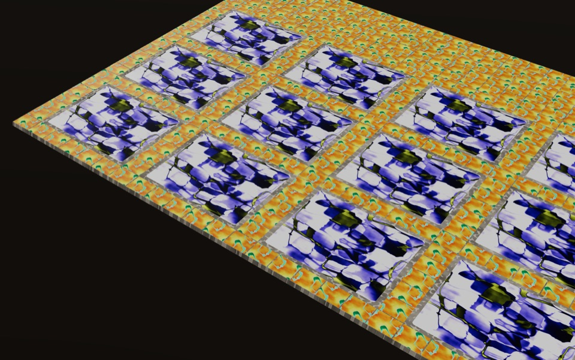

Vibed · Reused · Tiled
Design families for reused tile stock
Describe a tiling intention as a design family, sample an uncertain reused stock, solve layouts inside real boundaries, and review the result in 2D and 3D. Optional LLM assist drafts design families for you.
Open the app